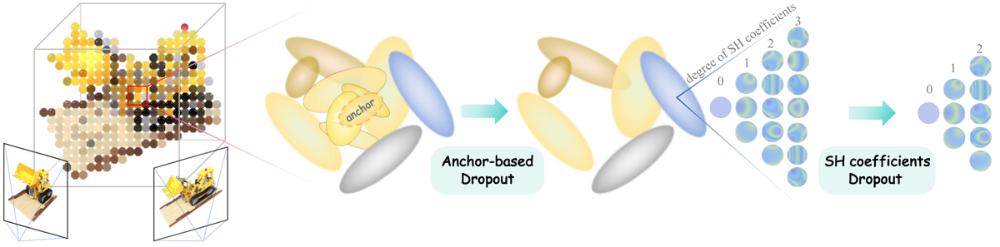
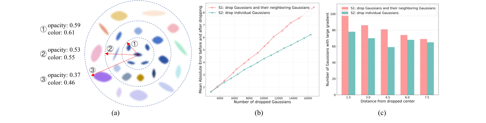
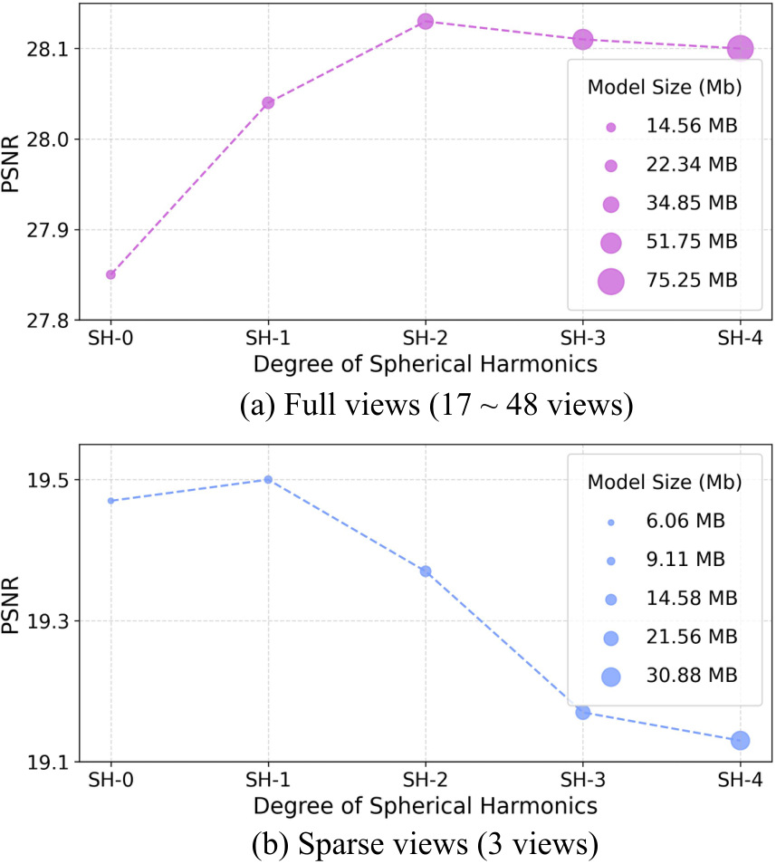
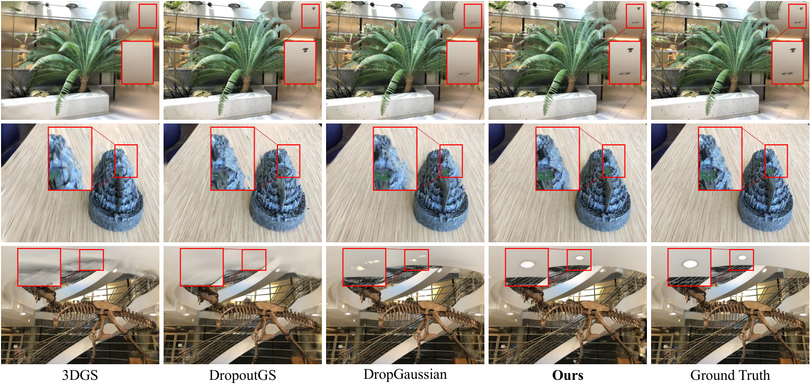
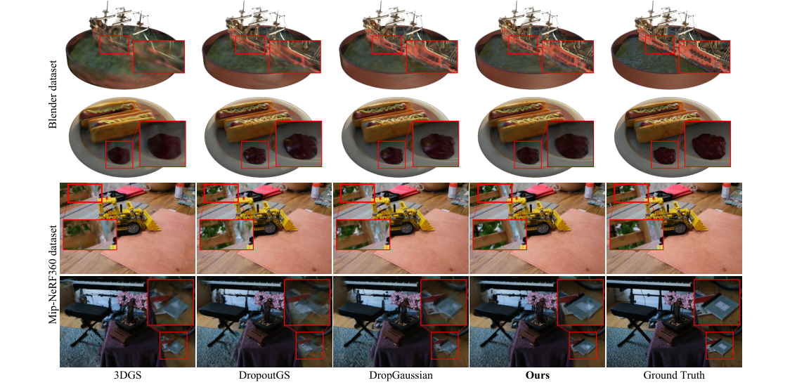

Dropping
简单摘要
为了解决这些问题，我们提出了一种新颖的基于锚的 Dropout 策略。该策略进一步减轻了过度拟合，并通过 SH 截断实现灵活的训练后模型压缩。

逼真的新颖视图合成（NVS）仍然是计算机视觉和图形领域的核心挑战。尽管 3DGS 在密集输入视图方面表现出色，但在使用稀疏视图进行训练时面临着重大挑战。
核心创新
第一，此外，这些方法忽略了高次球谐系数（SH）对过拟合的影响。
第二，为了解决这些问题，我们提出了一种新颖的基于锚的 Dropout 策略。
第三，为了克服上述限制，我们提出了如图所示的方法，该方法丢弃空间相关的高斯组，而不是单个孤立的高斯。
技术细节
虽然这有利于协作渲染，但它也降低了 naive Dropout 的有效性。如图所示，虽然使用高度 SH 可以提高全视图条件下的性能，但它会导致稀疏视图设置中的过度拟合。核心思想是删除整个信息区域，从而迫使模型依赖更广泛的上下文线索进行重建，并鼓励学习非局部的结构场景特征。


3.1 预赛
3DGS 使用大量显式高斯函数表示 3D 场景。位置、协方差、颜色（由一组球谐系数表示）和不透明度。为了有效优化，协方差通常被分解为缩放向量和旋转四元数。
3.2 试点研究
相反，丢弃由 10 个相邻高斯组成的簇会产生显着的性能变化和更强的梯度信号。虽然这有利于协作渲染，但它也降低了 naive Dropout 的有效性。如图所示，虽然使用高度 SH 可以提高全视图条件下的性能，但它会导致稀疏视图设置中的过度拟合。
3.3 基于锚点的 Dropout
为了克服上述限制，我们提出了如图所示的方法，该方法丢弃空间相关的高斯组，而不是单个孤立的高斯。核心思想是删除整个信息区域，从而迫使模型依赖更广泛的上下文线索进行重建，并鼓励学习非局部的结构场景特征。该过程在训练期间执行，步骤如下。
3.4 球谐函数压差
现有的Dropout方法仅根据不透明度关注高斯分布的存在或不存在，而忽略了Dropout中其他属性的明显特征。我们观察到高次 SH 系数也容易出现过拟合。为了解决这个问题，我们提出了针对这些系数的 Dropout 策略。
3.5 损失函数
我们提出的策略可以无缝集成到现有 3DGS 框架的训练流程中，而无需修改其目标函数。我们采用标准损失，结合 L1 Norm 和 SSIM 损失来最小化渲染图像和真实图像之间的差异。其中 是控制 L1 和 SSIM 项相对贡献的平衡权重。
$$ C = \sum_{i=1}^{N} c_i \alpha_i \prod_{j=1}^{i-1} (1 - \alpha_j). $$
这条公式定义了论文中的一个核心计算关系。阅读时可以先确认左侧要得到的结果，再看右侧由 C、N、i 如何共同构成这个结果。
$$ m_i = \begin{cases} 0 & \text{if } G_i \in \mathcal{D} \\ 1 & \text{otherwise} \end{cases}. $$
这条公式定义了论文中的一个核心计算关系。阅读时可以先确认左侧要得到的结果，再看右侧由 cases、if、in、D 如何共同构成这个结果。
$$ \hat{\alpha}_i = \alpha_i \cdot m_i. $$
这条公式定义了论文中的一个核心计算关系。阅读时可以先确认左侧要得到的结果，再看右侧由 hat、alpha、i、cdot 如何共同构成这个结果。
$$ \mathbf{c} = [\mathbf{c}^{(0)}, \mathbf{c}^{(1)}, \dots, \mathbf{c}^{(L)}], $$
这条公式定义了论文中的一个核心计算关系。阅读时可以先确认左侧要得到的结果，再看右侧由 c、c、c、dots 如何共同构成这个结果。
$$ \tilde{\mathbf{c}} = [\mathbf{c}^{(0)}, \dots, \mathbf{c}^{(l_\text{max})}, \mathbf{0}, \dots, \mathbf{0}]. $$
这条公式定义了论文中的一个核心计算关系。阅读时可以先确认左侧要得到的结果，再看右侧由 tilde、c、c、dots 如何共同构成这个结果。
$$ \mathcal{L} = \mathcal{L}_{\text{L1}}(\hat{C}, C_{gt}) + \lambda \mathcal{L}_{\text{SSIM}}(\hat{C}, C_{gt}), $$
这条公式定义了论文中的一个核心计算关系。阅读时可以先确认左侧要得到的结果，再看右侧由 L、L、L、hat 如何共同构成这个结果。
实验结论
实验主要验证：为了综合评估渲染质量，我们采用三个广泛使用的指标。结果上，完整模型达到了最好的性能，说明Drop Anchor和Drop SH是互补的，共同提升模型的整体性能。




4.1 实施细节
实验主要验证：LLFF 和 MipNeRF-360 的两个真实数据集，以及 Blender 的一个合成数据集。结果上，为了综合评估渲染质量，我们采用三个广泛使用的指标。
4.2 比较结果
实验主要验证：如图和所示，我们提供了不同场景的定性比较，说明了我们方法的优越性。结果上，这会导致更完整和一致的新颖视图合成，如图所示，与基线相比，我们的方法保留了更多的结构细节。
4.3 模型尺寸的压缩
实验主要验证：我们方法的一个独特之处是 SH 系数的 Dropout，它使得场景外观能够从低阶项到高阶项增量存储。结果上，在推理时，可以通过删除高次 SH 系数来截断训练后的模型。
4.4 兼容性
实验部分首先关心的是：提议的 Dropout 框架是轻量级和模块化的，可以轻松插入其他 3DGS 变体。
对比结果表明，如表和图所示，将我们的框架应用于 FSGS 、 Cor-GS 、 DNGaussian 和 Scaffold-GS 显着提高了它们在稀疏视图条件下的性能。进一步结合定性现象和消融分析，可以看出：这表明我们的方法具有广泛的适用性，并且可以增强其他 3DGS 框架在视图稀缺场景中的鲁棒性。
4.5 培训效率
实验主要验证：我们在同一 NVIDIA H100 GPU 上运行我们的方法和普通 3DGS 10,000 次迭代，以比较它们在不同数据集上的总训练时间。结果上，如表所示，我们的方法仅导致训练时间略有增加（与 3DGS 相比不到 2.8%）。
4.6 消融研究
实验部分首先关心的是：我们在表中进行了消融研究，揭示了以下内容。
对比结果表明，(1) 删除“Drop Anchor”策略会导致所有指标的性能显着下降，这证实了我们基于空间 Anchor 的 Dropout 在打破正则化局部冗余方面的有效性。进一步结合定性现象和消融分析，可以看出：完整模型达到最佳性能，表明Drop Anchor和Drop SH是互补的，共同提升模型的整体性能。
4.7 超参数敏感性分析
实验主要验证：我们对三个关键超参数进行敏感性分析。结果上，对于每次分析，我们都会改变目标超参数，同时保持其他超参数固定，以评估其对模型性能的影响。
理解评价
如果把这篇论文放回问题背景里看，它真正的价值在于：为了解决这些问题，我们提出了一种新颖的基于锚的 Dropout 策略。这说明作者不是只补一个局部模块，而是在重新组织问题该怎样被解决。
最能支撑这个判断的，还是实验给出的证据：实验结果表明，其性能大大优于现有的 Dropout 方法，计算开销可以忽略不计，并且可以轻松集成到各种 3DGS 变体中以增强其性能。换句话说，这些设计并不只是概念上更完整，而是实实在在改变了最终结果。
当然，它离真正成熟的方案还有距离：为此，我们提出了一种新颖的 Dropout 策略，该策略丢弃整个空间区域而不是孤立的高斯分布，并有效地破坏局部信息依赖性，迫使模型学习更强大的全局场景表示。后续更值得继续推进的方向，是 完整模型达到最佳性能，表明Drop Anchor和Drop SH是互补的，共同提升模型的整体性能。